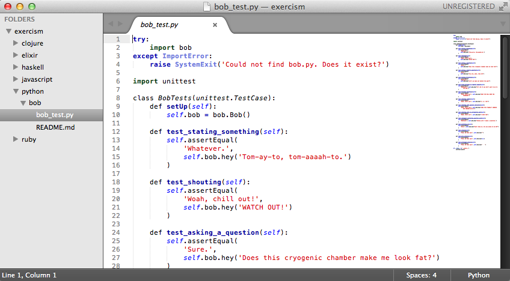
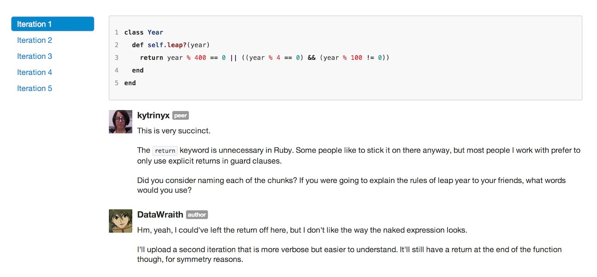

The content here is really sketchy'd-out still, still working on this.
The changes being made on this site are informed by user research, see https://github.com/exercism/website/issues/14
Exercism = Exercise + Exorcism
critically reading others' code is important
"One particularly well-kept secret is that looking at someone's code with an eye towards finding ways of improving it can teach you more about writing readable code than receiving feedback on your own code."
Doing this forces you to think about why you make the trade-offs that you do, what in the code you are reacting to, why you are reacting to it, and how you might improve it.
There is rarely only one good solution to a problem. Asking questions and articulating your thoughts about these small problems can change your thinking about the issues you face in the code bases you work in on a day-to-day basis.
By repeating this process you will:
People usually spend 30-120 minutes passing the tests the first time, and often just as long refactoring and improving coding style. People often go through 3-9 revisions .

Example Exercise (no example right now)
